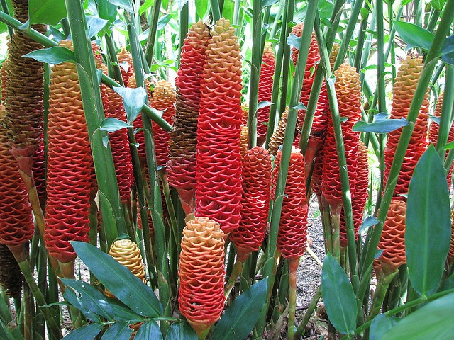

Paus Orca
klik untuk tau kisah lengkapnya...
Paus orca, atau sering disebut paus pembunuh (Orcinus orca), adalah salah satu jenis paus bergigi yang paling terkenal dan cerdas. Meskipun disebut "paus", orca sebenarnya termasuk dalam keluarga lumba-lumba, dan merupakan anggota terbesar dari kelompok tersebut. Tubuhnya besar, ramping, dan berwarna hitam-putih yang mencolok. Warna tubuh yang khas ini membantu mereka menyamar saat berburu di laut—disebut dengan kamuflase disruptif.
Orca bisa tumbuh hingga 8–10 meter panjangnya dan beratnya mencapai 6 ton. Mereka hidup dalam kelompok sosial yang disebut pod, yang terdiri dari beberapa individu hingga puluhan ekor. Setiap pod memiliki "dialek suara" yang unik, dan mereka berkomunikasi menggunakan berbagai klik, peluit, dan suara lain. Orca sangat cerdas dan dikenal karena kemampuan mereka berburu secara kooperatif dan terorganisir, hampir seperti serigala laut. Mereka bisa menjatuhkan anjing laut dari bongkahan es, mengelabui ikan, atau bahkan berburu hiu dan paus yang lebih besar.
Makanan orca bervariasi tergantung pada habitatnya. Beberapa pod berburu ikan seperti salmon dan herring, sedangkan pod lainnya dikenal sebagai pemangsa mamalia laut seperti anjing laut, singa laut, bahkan paus kecil. Karena kemampuan berburu yang luar biasa inilah mereka disebut "paus pembunuh", meskipun sebenarnya mereka tidak berbahaya bagi manusia di alam liar. Orca tidak pernah tercatat membunuh manusia di alam bebas, tetapi ada insiden dalam penangkaran.
Orca hidup di hampir semua samudra di dunia, dari daerah tropis hingga kutub. Mereka dapat berenang sangat cepat, hingga 56 km/jam, menjadikannya salah satu mamalia laut tercepat. Selain itu, orca juga sangat penyayang dan terikat kuat dengan keluarganya—anak orca bisa hidup bersama induknya seumur hidup.
Sayangnya, meskipun belum termasuk hewan yang terancam punah, orca menghadapi ancaman serius dari polusi laut, penurunan populasi ikan, kebisingan bawah laut, dan penangkaran di taman laut. Beberapa komunitas orca, seperti yang berada di pesisir Pasifik Barat Laut, jumlahnya semakin sedikit dan menjadi perhatian ilmiah.
🋠Fakta Menarik mengenai Orca:
Orca adalah predator puncak di laut—tidak ada hewan lain yang memangsa mereka.
Mereka bisa meniru suara manusia dan suara lumba-lumba lainnya dalam penangkaran.
Pod orca memiliki struktur sosial matrilineal, artinya dipimpin oleh induk betina.
Salah satu taktik berburu unik mereka adalah membuat gelombang besar untuk menjatuhkan anjing laut dari bongkahan es.
Kantong Semar
klik untuk tau kisah lengkapnya...
Kantong semar adalah tumbuhan unik pemakan serangga yang termasuk dalam genus Nepenthes. Tumbuhan ini dikenal karena bentuknya yang menyerupai kantong atau kendi kecil yang menggantung di ujung daunnya. Kantong ini sebenarnya adalah modifikasi dari daun yang berfungsi sebagai perangkap serangga. Di dalam kantong terdapat cairan lengket yang mengandung enzim pencerna. Serangga yang tergoda masuk karena warna dan aroma manis akan terpeleset dan tenggelam dalam cairan tersebut, lalu dicerna oleh tanaman untuk memenuhi kebutuhan nutrisinya, terutama nitrogen yang sulit diperoleh di tanah miskin unsur hara.
Kantong semar tumbuh di lingkungan yang tanahnya miskin nutrisi, seperti rawa-rawa, pegunungan, dan hutan tropis. Tanaman ini bisa ditemukan di berbagai negara Asia Tenggara, termasuk Indonesia, Malaysia, dan Filipina. Indonesia sendiri memiliki banyak spesies endemik kantong semar, terutama di pulau Kalimantan dan Sumatra. Beberapa spesiesnya bahkan tergolong langka dan dilindungi karena habitatnya yang terus menyempit akibat perambahan hutan dan perubahan iklim.
Ukuran kantong semar sangat beragam, mulai dari beberapa sentimeter hingga lebih dari 30 cm. Bahkan ada spesies seperti Nepenthes rajah di Sabah, Malaysia, yang kantongnya cukup besar untuk menangkap hewan kecil seperti tikus! Selain fungsinya yang unik, kantong semar juga memiliki bentuk dan warna yang indah, sehingga sering dijadikan tanaman hias. Namun, tanaman ini tidak boleh dipetik sembarangan, terutama di habitat aslinya, karena termasuk tumbuhan langka dan penting dalam keseimbangan ekosistem.
🌱 Fakta Menarik Kantong Semar:
Nama "kantong semar" berasal dari tokoh pewayangan Semar, karena bentuk kantongnya dianggap mirip tubuh Semar yang bulat.
Beberapa spesies menghasilkan dua jenis kantong: kantong bawah (terletak di dekat tanah) dan kantong atas (tergantung di udara).
Selain serangga, kantong semar juga bisa menyerap nutrisi dari kotoran hewan kecil yang tertarik ke dalam kantongnya.
Di beberapa daerah, cairan kantong semar digunakan secara tradisional sebagai obat luka ringan atau minuman segar, meskipun ini tidak dianjurkan secara ilmiah.
Dracula Simia
klik untuk tau kisah lengkapnya...
Dracula simia, atau yang populer dengan nama Monkey Orchid (anggrek monyet), adalah spesies bunga langka dari keluarga Orchidaceae yang terkenal karena bentuk bunganya yang sangat menyerupai wajah monyet. Nama "Dracula" berasal dari bahasa Latin yang berarti "naga kecil" atau "iblis kecil", merujuk pada kelopak yang runcing menyerupai taring atau sayap kelelawar. Sementara "simia" berarti "monyet", menggambarkan kemiripan bunganya dengan wajah primata, lengkap dengan pola yang menyerupai mata, hidung, dan mulut. Kemunculan bentuk wajah ini bukan hasil manipulasi manusia, melainkan fenomena evolusi alami yang luar biasa.
Tanaman ini termasuk dalam genus Dracula, yang memiliki sekitar 118 spesies anggrek, sebagian besar ditemukan di hutan-hutan tropis Amerika Tengah dan Selatan. Dracula simia sendiri tumbuh secara epifit, artinya ia hidup menempel pada batang atau cabang pohon di lingkungan hutan berkabut yang lembap, tanpa merugikan pohon tersebut. Habitat alaminya berada di ketinggian 1.000–2.000 meter di atas permukaan laut, terutama di wilayah pegunungan Ekuador dan Peru, yang memiliki iklim sejuk, berkabut, dan sangat lembap.
Salah satu daya tarik utama Dracula simia selain bentuknya adalah aroma bunganya yang mirip buah jeruk matang. Ini adalah strategi evolusioner untuk menarik serangga penyerbuk seperti lalat buah. Bunga Dracula simia juga cukup unik karena tidak memiliki musim mekar tertentu, melainkan dapat berbunga kapan saja sepanjang tahun jika lingkungannya mendukung. Warna bunga biasanya cokelat kemerahan atau merah muda, dengan pola bintik-bintik dan garis-garis gelap yang memperjelas ilusi wajah monyet.
Namun, tanaman ini sangat sulit dirawat di luar habitat aslinya. Dracula simia membutuhkan lingkungan yang sangat spesifik: suhu sejuk (12–22°C), kelembapan udara tinggi (sekitar 80–90%), serta pencahayaan redup seperti di bawah kanopi hutan. Jika tidak, tanaman ini bisa cepat layu atau gagal berbunga. Karena kebutuhan lingkungannya yang kompleks, Dracula simia lebih banyak dirawat oleh kolektor anggrek profesional atau peneliti di rumah kaca khusus, bukan oleh penggemar tanaman pemula.
🌸 Fakta Menarik tentang Dracula simia:
Bunganya bisa mekar kapan saja sepanjang tahun jika kondisi lingkungannya sesuai.
Wajah "monyet" pada bunganya adalah ilusi visual alami yang terbentuk dari struktur kelopak dan pola warna.
Meskipun langka, Dracula simia belum punah, tetapi habitat aslinya makin terancam oleh deforestasi dan perubahan iklim.
Dracula simia termasuk dalam kelompok anggrek yang sangat sensitif terhadap perubahan lingkungan, sehingga sulit dibudidayakan secara massal.
Spiny bush viper
klik untuk tau kisah lengkapnya...
Spiny Bush Viper, atau dalam nama ilmiahnya Atheris hispida, adalah salah satu ular paling unik dan mencolok di dunia karena sisiknya yang tampak seperti duri atau bulu. Penampilan sisik ini membuat ular ini terlihat seperti naga kecil dalam dongeng. Sisik-sisiknya terangkat tajam, terutama di bagian kepala dan tubuh, memberikan kesan berduri yang sangat khas. Ular ini termasuk dalam keluarga Viperidae, yaitu kelompok ular berbisa yang memiliki taring panjang dan bisa melipat taringnya ke dalam mulut saat tidak digunakan.
Spiny Bush Viper adalah ular pohon yang hidup di hutan hujan tropis Afrika Tengah dan Timur, terutama di negara-negara seperti Republik Demokratik Kongo, Uganda, dan Kenya. Mereka termasuk hewan nokturnal, yang berarti lebih aktif di malam hari, dan biasanya menghabiskan waktu di pepohonan untuk berburu mangsa seperti katak, burung kecil, dan mamalia kecil. Karena hidup di pohon dan memiliki warna tubuh yang menyatu dengan lingkungan (hijau, kuning, atau bahkan kebiruan), ular ini sangat sulit dideteksi di habitat aslinya.
Ukuran tubuhnya relatif kecil, dengan panjang rata-rata 40–75 cm, tetapi jangan tertipu—bisa dari Spiny Bush Viper sangat kuat dan dapat menyebabkan gangguan serius pada sistem darah, seperti pembekuan atau kerusakan jaringan. Meskipun begitu, kasus gigitan terhadap manusia sangat jarang, karena ular ini tinggal di daerah terpencil dan tidak agresif jika tidak diganggu.
Karena keunikan tampilannya, Spiny Bush Viper sering menarik perhatian para herpetolog (peneliti reptil dan amfibi) serta kolektor hewan eksotik. Namun, ular ini tidak cocok untuk dipelihara oleh orang biasa, karena selain berbisa, mereka juga membutuhkan lingkungan dengan kelembapan tinggi dan suhu stabil, seperti di hutan tropis. Dalam beberapa kasus, perdagangan liar juga menjadi ancaman bagi spesies ini.
🐍 Fakta Menarik tentang Spiny Bush Viper
dikenal juga dengan nama “rough-scaled bush viper” karena tekstur tubuhnya yang kasar.
Tidak bertelur! Spiny Bush Viper adalah ovovivipar, artinya mereka melahirkan anak ular hidup langsung dari tubuh induknya.
Taringnya bisa memanjang secara tiba-tiba saat menyerang mangsa—karakteristik umum dari keluarga viper.
Meskipun kecil dan cantik, tidak ada penawar khusus (antivenom) untuk bisanya, sehingga penanganan medis harus bersifat suportif.
Penampilan luar biasanya membuat ular ini sering dijuluki "dragon snake" oleh komunitas pecinta reptil.
Beehive ginger (Zingiber spectabilis)
klik untuk tau kisah lengkapnya...

Beehive Ginger, atau dalam nama ilmiahnya Zingiber spectabilis, adalah tanaman hias tropis yang menakjubkan dan dikenal karena bentuk bunganya yang sangat unik, menyerupai sarang lebah. Bunga ini bukan hanya cantik, tetapi juga menarik perhatian karena susunan "sarang" berwarna cerah seperti merah, kuning, jingga, atau cokelat yang tampak seperti lilin atau plastik, padahal semuanya adalah bagian alami dari tanaman. "Sarang" tersebut sebenarnya adalah braktea (daun pelindung bunga), sementara bunga sejatinya muncul kecil-kecil di sela-sela braktea itu.
Tanaman ini berasal dari kawasan Asia Tenggara, termasuk Thailand, Malaysia, dan Indonesia, namun kini telah banyak dibudidayakan di daerah tropis lainnya seperti Amerika Tengah dan Hawaii sebagai tanaman hias dan bahan dekorasi tropikal. Beehive Ginger termasuk dalam keluarga Zingiberaceae, keluarga jahe-jahean, dan berkerabat dekat dengan jahe biasa, lengkuas, dan kunyit. Tanaman ini tumbuh dari rimpang bawah tanah dan dapat mencapai tinggi hingga 1,5–2 meter, dengan daun panjang hijau tua yang lebar dan batang semu seperti tebu.
Selain tampilannya yang indah, Beehive Ginger juga memiliki manfaat tradisional dan pengobatan. Di beberapa budaya Asia, rimpangnya digunakan sebagai obat herbal untuk mengatasi gangguan pencernaan, peradangan, dan demam. Kandungan senyawa dalam rimpang seperti gingerol dan zat antimikroba memberi manfaat kesehatan yang serupa dengan jahe biasa. Selain itu, air yang terkumpul dalam "sarang lebah"-nya sering mengandung cairan nektar manis yang disukai serangga dan terkadang digunakan untuk keperluan kosmetik alami oleh masyarakat lokal.
Beehive Ginger menyukai iklim tropis dengan kelembapan tinggi dan tanah yang kaya humus, serta tempat yang teduh tapi terang. Karena keindahannya yang tahan lama setelah dipotong, bunga ini sering digunakan dalam rangkaian bunga tropis dan dekorasi hotel atau spa berkelas. Dalam perawatan taman, tanaman ini tidak memerlukan terlalu banyak perhatian asalkan lingkungan sesuai—namun, karena sifatnya yang menyebar melalui rimpang, Beehive Ginger bisa berkembang cukup luas jika tidak dikendalikan.
🌺 Fakta Unik tentang Beehive Ginger:
Brakteanya bisa menyimpan air hujan atau embun, dan itu menjadi rumah alami bagi serangga kecil.
Meskipun bunganya tampak seperti plastik, teksturnya lembut dan agak berlilin saat disentuh.
Tanaman ini bisa mekar selama beberapa minggu hingga bulan, membuatnya sangat disukai untuk dekorasi taman tropis.
Air dari brakteanya di beberapa daerah dipakai untuk keramas alami, karena dipercaya menyuburkan rambut.
Axolotl
klik untuk tau kisah lengkapnya...
Axolotl (Ambystoma mexicanum) adalah hewan amfibi unik yang berasal dari danau-danau di sekitar Mexico City, terutama Danau Xochimilco. Axolotl dikenal luas karena kemampuannya yang luar biasa: tidak mengalami metamorfosis sempurna seperti amfibi lain, sehingga tetap berada dalam bentuk larva seumur hidup. Artinya, meskipun sudah dewasa, axolotl tetap memiliki insang luar yang mencuat dari sisi kepalanya, bentuk tubuh mirip berudu, dan tetap hidup di air. Fenomena ini disebut neoteni, dan sangat jarang terjadi di dunia hewan.
Tubuh axolotl biasanya berwarna gelap di alam liar, namun axolotl hasil penangkaran bisa berwarna putih pucat (leucistic), emas, albino, atau bahkan belang. Panjang tubuhnya bisa mencapai 15–30 cm, dan ia hidup secara akuatik penuh, artinya tidak pernah naik ke darat seperti katak dewasa. Axolotl juga termasuk karnivora kecil yang memakan cacing, serangga air, krustasea kecil, dan kadang-kadang ikan kecil. Mereka memiliki penglihatan yang buruk, jadi menggunakan indra penciuman dan sentuhan untuk mencari makanan.
Salah satu kemampuan paling luar biasa dari axolotl adalah regenerasi, yaitu kemampuan untuk menumbuhkan kembali bagian tubuh yang hilang—termasuk kaki, ekor, mata, tulang belakang, bahkan sebagian jantung dan otak! Karena kemampuan regeneratif ini, axolotl menjadi subjek penting dalam penelitian biomedis di seluruh dunia, terutama untuk studi tentang penyembuhan luka dan regenerasi organ pada manusia.
Sayangnya, axolotl kini masuk dalam daftar hewan yang terancam punah di alam liar karena pencemaran air, urbanisasi, dan masuknya spesies asing ke habitatnya. Jumlah mereka di Danau Xochimilco sangat menurun drastis. Namun, di penangkaran dan laboratorium, populasi axolotl relatif stabil, bahkan sering dijadikan hewan peliharaan eksotis karena sifatnya yang lucu dan tidak agresif.
🦠Fakta Menarik tentang Axolotl:
Nama "axolotl" berasal dari bahasa Nahuatl, yang berarti “anjing air†atau dikaitkan dengan dewa Aztek bernama Xolotl.
Axolotl bisa bernapas melalui insang, kulit, dan paru-paru, meskipun jarang ke permukaan.
Di laboratorium, axolotl dapat diberi hormon agar menjalani metamorfosis dan menjadi salamander darat, namun ini sangat jarang dilakukan.
Meskipun terlihat seperti tersenyum, ekspresi itu hanyalah bentuk wajah alami axolotl, bukan emosi.
Usia hidup axolotl bisa mencapai 10–15 tahun di penangkaran jika dirawat dengan baik.